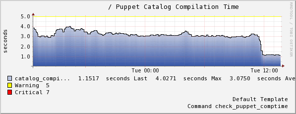

Your browser doesn't support the features required by
impress.js, so you are presented with a simplified version of
this presentation.
For the best experience please use the latest Chrome
or Safari browser. Firefox 10 (to be released soon)
will also handle it.
Running Puppet on Cloudstack Instances
@jsnby
December 2012
Goals:
- Do NOT use Puppet's auto-signing feature
- Instances receive all config via Puppet
- Minimize the number of CloudStack templates
- No manual intervention
Translation:
Make one API call to launch the VM, the automation takes over and puts
the box into production (or dev, or QA).
Puppet's auto cert signing
- Automatically signs any certificate from a given domain
- Exposes a vulnerability because anyone that can connect to the
puppet master can have a cert signed for that domain
Working around auto-signing:
I decided to seed a pre-signed certificate into the templates. Ran into
a couple of issues though...
/etc/puppet/puppet.conf on the client:
[agent]
...
certname = mycert001
node_name = facter
node_name_fact = fqdn
The node_name and
node_name_fact settings were necessary because the
Puppet client thought it's node name was "mycert001".
Had to modify /etc/puppet/auth.conf on the Puppet master.
Details about why and what to change found in issue
2128:
# allow nodes to retrieve their own catalog
path ~ ^/catalog/([^/]+)$
method find
allow *
#allow $1
# allow nodes to retrieve their own node definition
path ~ ^/node/([^/]+)$
method find
allow *
#allow $1
Run Puppet as soon as the box starts:
- Turn off splay!
- chkconfig Puppet on!
Let's talk about node classification!
A few ways:
- {site,node}.pp
- Hostname regex
- Dashboard/Puppet Enterprise
- Using an ENC script
- Use facts
- Probably other ways too!
Why use facts?
They are first class citizens in the Puppet ecosystem.
Passing a $::role (and other facts) to Puppet.
Use CloudStack's user-data to store key=value pairs (up to 2KB) that get loaded into
facts on the puppet client
Example user-data:
role=webserver
location=datacenter1
environment=production
Code to load user-data into facts is available on
Github.
Implementing $::role in the Puppet code.
Everyone is a default node. We don't have to worry about adding nodes to
site.pp, conforming to a host naming convention, or adding meta-data to
an ENC.
Our simplified* site.pp:
import 'base'
node default {
include base
}
*Irrelevant stuff omitted for clarity
Excerpts from base.pp:
class base {
# Includes that apply to all machines
case $::role {
'somerole': {
include somerole
}
'otherrole': {
include otherrole
}
}
}
What about $::environment? Don't forget dev/qa/staging nodes!
Passing the Puppet environment as a fact proves to be tricky.
File-serving and plugin-sync don't quite work as you might expect.
To solve those issues, I created something called cloudstart
(find it on
Github). It's similar to cloud-init but simpler.
Why not just use cloud-init?
- Every byte of user-data is precious
- Wanted plugins to be scripting language agnostic
- Simple
You can pass the environment the same way we set $::role, by adding another
key/value pair to the user-data (key == "environment").
Stored Configurations
<Plug>PuppetDB</Plug>

If you're using PuppetDB, you should use Erik Dalen's
puppetdbquery module (available on the
Puppet Forge)
Stored Configurations Use Case:
Automatically add nodes to Nagios
@@nagios_host { $::fqdn:
ensure => present,
address => $::ipaddress_eth0,
use => 'linux-server',
hostgroups => 'Linux Servers',
}
Cleanup!
But now we're working in the cloud. So we destory/terminate that instance...
And your phone is blowing up with Nagios alerts
Compare "active" nodes in PuppetDB vs. hosts running in the cloud, deactivating any
hosts in PuppetDB that are no longer running (have been terminated).
Deactivating a node in PuppetDB
On the Puppetmaster:
puppet node deactivate <hostname>
That deactivated it from PuppetDB. What about actually cleaning up the Nagios host?
Purge un-puppet-managed resources from your Nagios host:
resources { 'nagios_host':
purge => true,
}